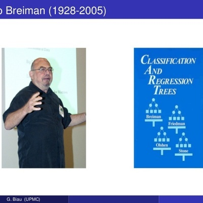

Where’s the Randomness
Notes Adapted from Leo Breiman’s
Applied Statitics Class of 1991
2024-07-20
Proloque
|
One problem in the field of statistics has been that everyone wants to be a theorist. Part of this is envy - the real sciences are based on mathematical theory. In the universities for this century, the glamor and prestige has been in mathematical models and theorems, no matter how irrelevant.